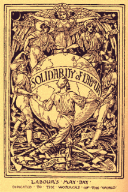

Submitted on Tue, 04/24/2012 - 8:12pm
Whereas increasing numbers of working class and dispossessed people in the United States have begun to meet face to face to proclaim their opposition to economic injustice and define their interests in democratic popular assemblies, autonomous from political parties, as part of the Occupy Movement, which resonates deeply with the IWW's traditions and principles, and
Whereas millions of working class and dispossessed people around the world, but especially in Northern Africa and Western Asia, have been organizing themselves to overthrow the governments that enforce the capitalist and neocolonial domination and exploitation they have resisted for generations, and
Whereas the IWW has stood since its founding in 1905 for the proposition that:
"The working class and the employing class have nothing in common. There can be no peace so long as hunger and want are found among millions of the working people and the few, who make up the employing class, have all the good things of life.
Between these two classes a struggle must go on until the workers of the world organize as a class, take possession of the means of production, abolish the wage system, and live in harmony with the Earth." and
Whereas since 2006 the tradition of the movement for the rights of migrant workers in the U.S. has been to mobilize themselves and their allies for mass actions on May 1 to disrupt the functioning of the economic system and political discourse of the 1%, and
Whereas every year May Day is celebrated globally as International Workers Day to commemorate the struggle of the international working class to emancipate itself through the class war over the centuries, and
Whereas May Day 1890 was proclaimed to be an international day of working class protest by the Second International against the repression of the 8 Hour Day movement in the U.S. where 8 mostly immigrant anarchist labor organizers were arrested, with 4 being hanged and one committing suicide the night before the hangings, after an unknown person threw a bomb at police who were repressing a protest against police brutality in Haymarket Square in Chicago, and
Whereas the Los Angeles branch of the IWW welcomes this opportunity to organize alongside OccupyLA and other participants in the Los Angeles General Strike Coalition to help the working class build the skills, the community, and the combativeness necessary to defend ourselves, our elders, and the generations to come from the global threats of austerity, exploitation, imperialism and ecocide.
Be it resolved that the LA Branch of the IWW endorses the May 1, 2012 General Strike and commits to work as part of the Los Angeles General Strike Coalition by conducting trainings and participating in actions in the lead up to May 1.
 The International Solidarity Commission of the Industrial Workers of the World condemns the actions taken by the Mossos d'Esquadra, Catalonia police. Laura Gómez, the General Secretary of CGT-Barcelona was arrested by the Mossos d'Esquadra for trumped up charges that have no basis in fact. It is obvious that this is nothing more than an act of repression and intimidation in response to the growing workers' mobilizations in Spain. We demand the immediate release of Laura Gómez and the withdrawal of all charges.
The International Solidarity Commission of the Industrial Workers of the World condemns the actions taken by the Mossos d'Esquadra, Catalonia police. Laura Gómez, the General Secretary of CGT-Barcelona was arrested by the Mossos d'Esquadra for trumped up charges that have no basis in fact. It is obvious that this is nothing more than an act of repression and intimidation in response to the growing workers' mobilizations in Spain. We demand the immediate release of Laura Gómez and the withdrawal of all charges.